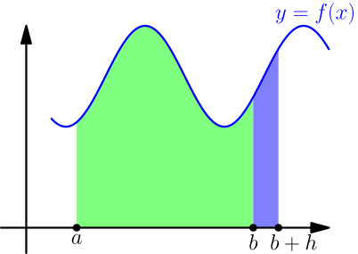
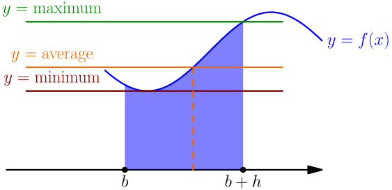

Fundamental Theorem of Calculus, Part 1¶
So far we have 3 calculus tools: limits, derivatives and integrals. We used limits for defining the derivative and calculating integrals, but so far we haven't seen any connection between integrals and derivatives. For a connection like that, we have two options:
- Try to integrate a derivative
- Try to calculate the derivative of an integral
We choose option 2 because it turns out to be easier. To calculate a derivative, we need a function that takes in a number as an argument and outputs a number. We can look at $\int_a^b f(x)\ dx$ as a function that takes in a number $b$, as in $$ I(b) = \int_a^b f(x)\ dx, $$ where I chose to name the function $I$ rather than $f$ because we already have a function named $f$, and $I$ reminds about how it's an integral. With the definition of derivative, we get $$ \begin{align} I'(b) &= \lim_{h \to 0} \frac{I(b+h)-I(b)}{h} \\ &= \lim_{h \to 0} \frac{\int_a^{b+h} f(x)\ dx - \int_a^b f(x)\ dx}{h}. \end{align} $$ I will draw pictures with $h > 0$, but everything works the same way if $h < 0$. The integrals we have so far look like this:

In the picture, $\int_a^{b+h} f(x)\ dx - \int_a^b f(x)\ dx$ means taking the entire colored area, both green and blue parts, and subtracting the green part. This gives the area of the blue part, which is $\int_b^{b+h} f(x)\ dx$. We can also verify this by splitting the $\int_a^{b+h}$ into two pieces (TODO), as in $$ \int_a^{b+h} f(x)\ dx - \int_a^bf(x)\ dx = \left(\int_a^bf(x)\ dx + \int_b^{b+h}f(x)\ dx\right) - \int_a^bf(x)\ dx. $$ Here the $\int_a^b$ integrals cancel as expected. So, we get $$ I'(b) = \lim_{h \to 0} \frac{\int_b^{b+h} f(x)\ dx}{h} = \lim_{h \to 0} \frac{\int_b^{b+h} f(x)\ dx}{(b+h)-b}. $$ After $\lim$ we have the integral average of $f$ between $b$ and $b+h$. If $f$ is continuous, then its graph consists of one part, and the average can be written as $$ \frac{\int_b^{b+h} f(x)\ dx}{h} = f(\text{some number between $b$ and $b+h$}), $$ because the average is between the minimum and maximum of $f$ on $[b, b+h]$.

If $f$ is continuous, then we can also move the limit inside it and we get $$ \begin{align} I'(b) &= \lim_{h \to 0} f(\text{some number between $b$ and $b+h$}) \\ &= f\left( \lim_{h \to 0} (\text{some number between $b$ and $b+h$}) \right) \\ &= f(b). \end{align} $$
If $f$ is continuous, then the derivative of the function $$ I(b) = \int_a^b f(x)\ dx $$ is $f(b)$.
This is known as part 1 of the fundamental theorem of calculus.
This result makes sense, because the derivative essentially tells how sensitive the function is to changes in input. A big derivative means that changing the input of the function a little bit will change the output by a lot, and a small derivative means that the output won't change much. If $f(b)$ is big, then the graph is high above $x$ axis, and changing $b$ will change the area a lot. If $f(b)$ is small, then the area won't change much.
TODO: example showing why this doesn't work for discontinuous functions